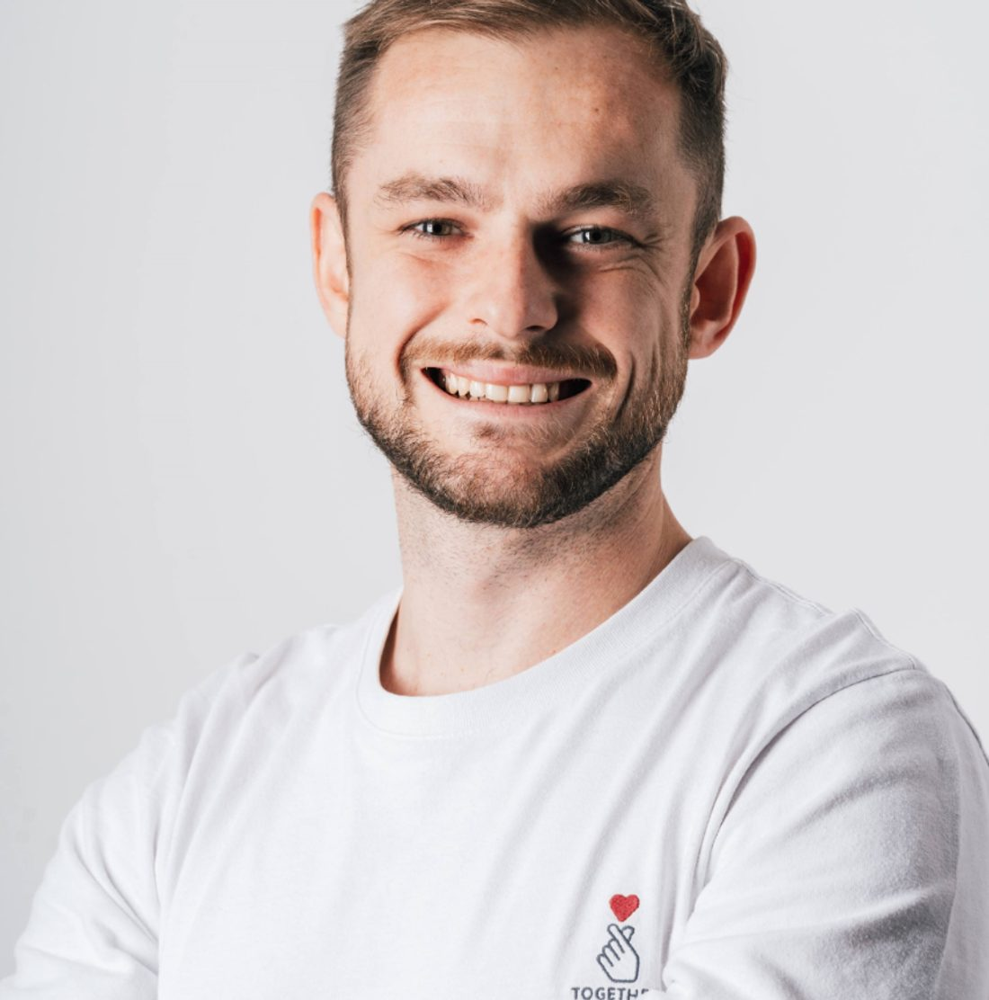

01 · Piloter le terrain
MyTelencia
Entreprise · Gestion de flotte
Un CRM sur mesure pour centraliser le suivi de flotte, les équipes, les interventions et la messagerie interne — la donnée opérationnelle au même endroit.
En développement — Livraison Septembre 2026